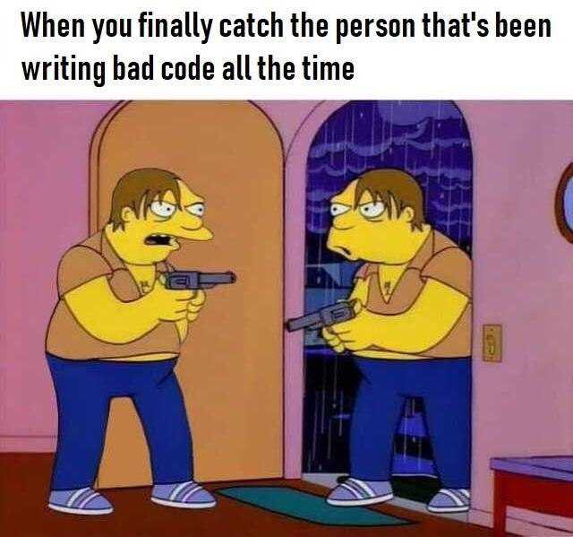

00. Link - When Not to Use Lock Files with Node.js
01. Link - The 80/20 Guide to Promises in Node.js
02. Link - 5 Free Ways To Host Your Node.js App In 2019
03. Link - Node.js file streams explained!
04. Link - Node v12.3.0 (with --experimental-wasm-modules flag)
05. Link - Folding the DOM
06. Link - JavaScript async and await in loops
07. Link - Javascript Array.push is 945x faster than Array.concat
08. Link - WebAssembly at eBay: A Real-World Use Case
09. Link - JavaScript Clean Code - Best Practices
10. Link - Making a Video Game in a Browser's Tab Icon!
